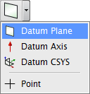
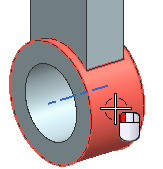
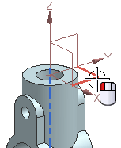
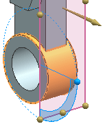

创建相切基准平面
创建一个相切于圆柱面的基准平面，以在新孔特征放置时使用。
-
在特征工具条上，点击基准/点下拉菜单中的基准平面。

-
点击对话框标题栏上的重置
 。
。对话框将返回到它的默认设置，这个练习中需要使用它的默认设置。
-
选择部件底部的圆柱面，如图所示。

-
选择基准 CSYS 的 XY 平面。

基准平面应该位于部件的 X 轴正方向一侧，点击平面方位组中的备选解 。

-
点击确定。